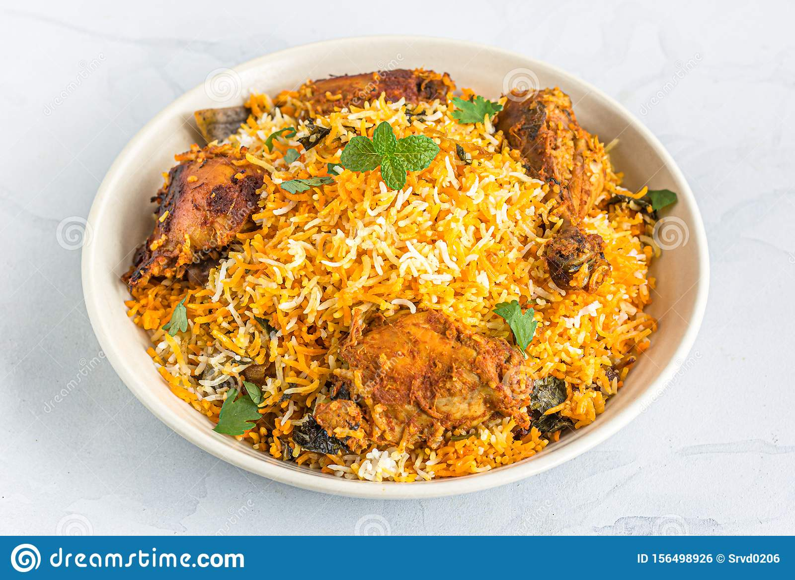
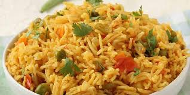
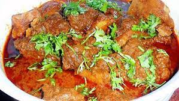

<!DOCTYPE html>
<html lang="en">
<head>
    <meta charset="UTF-8">
    <meta http-equiv="X-UA-Compatible" content="IE=edge">
    <meta name="viewport" content="width=device-width, initial-scale=1.0">
    <title>HOME PAGE</title>
</head>
<body>
    
</body>
</html>
<html>
    <body style="background-color:rgb(206, 232, 241);">
        <h1 style="color: blue;">
            HELLO WORLD
            </h1>
            <P1 style="color: rgb(93, 93, 207);" >
                Lets start to learn <b><i>HTML</i></b>
            </P1>
        <hr/>
        <h2 style="color: blueviolet;">
            HELLO WORLD
            </h2>
        <p2 style="color: rgb(112, 55, 165);">
            It is an example of <i>coding</i>
        </p2>
        
        <hr/>
        <h3 style="color: brown;">
            HELLO WORLD
            </h3>
            <p3 style="color: rgb(224, 83, 83);">
                IT is 5<sup>th</sup> generation of html 
            </p3>

        <hr/>
        <h4 style="color: rgb(146, 95, 28);">
            HELLO WORLD
            </h4>
            <p4 style="color: rgb(236, 182, 111);">
                H<sub>2</sub>O is the formula of water
            </p4>
        
        <hr/>
        <h5 style="color: rgb(46, 158, 161);">
            HELLO WORLD
            </h5>
            <p5 style="color: rgb(65, 109, 110);">
                The unweighted means of these series (for all 14 towns) are presented in figure <del>5</del> <b>7</b>,
together with early childhood mortality rates for Liverpool.
            </p5>
    
        <hr/>
        <h6 style="color:rgb(75, 73, 73);">
            HELLO WORLD
            </h6>
            <p6 style="color: grey;">
                All series show the devastating effects of both the Irish famine and the cholera epidemic of 1849.<bbr>refugees flooded into Liverpool (and other mainly northern towns to a lesser extent) in 1846–7, and severely distorted mortality statistics for the town, first because many of them were desperately ill on arrival</bbr>
            </p6>
        <hr/>
        <ol style="color: rgb(148, 105, 74);">
            <h1 style="text-align: center;color: chocolate;"><U>HELLO WORLD</h1></U>
            <li>hello world</li>
            <li>hello world</li>
            <li>hello world</li>
        </ol>
        <hr/>
        <ul style="color: rgb(117, 96, 80);">
            <li>
                <a href="./About.html" target="_self" >
               About
                </a>
            </li>
            <li>
                <a href="./Contact.html" target="_blank">
             Contact
                </a>
            </li>
            <li>
                <a href="./Home.html" target="_self">
                    Home

                </a>
            </li>
            <li>hello world</li>
            <li>hello world</li>
            <li>hello world</li>
        </ul>
        <hr/>
<OL>
    <H1 style="color: rgb(66, 127, 240);text-align: center;"><u><q>UI RESTAURANT</H1></u></q>

    <ol>
        <li style="color:red ;"> <h2><i><u>BIRYANI <del>Rs.139/-</del><b>Rs.159/-</b>  </u></i></h2></li>
    <p style="color: rgb(221, 62, 62);"><i>Biryani is a mixed rice dish originating among the Muslims of the Indian subcontinent. It is made with Indian spices, rice, either with meat, or eggs or vegetables such as potatoes. Biryani is one of the most popular dishes in South Asia, as well as among the diaspora from the region.</i></p>
    <ul style="color: rgb(172, 45, 45);">
        <li>Fennel seed/ aniseed</li>
        <li>Star anise</li>
        <li>Bayleaf</li>
        <li>Nutmeg</li>
    </ul>

<hr/>
    <li style="color:blue ;"><h2><i><u>PALAU <del>Rs.119/-</del><b>Rs.149/- </b></u></i></h2></li>
    <p style="color: rgb(35, 35, 177);"><i>Pilaf or pilau is a rice dish, or in some regions, a wheat dish, whose recipe usually involves cooking in stock or broth, adding spices, and other ingredients such as vegetables or meat, and employing some technique for achieving cooked grains that do not adhere.</p></i>
<ul style="color: rgb(101, 101, 216);">
    <li>900 gm chicken</li>
    <li>5 cloves garlic</li>
    <li>8 green cardamom</li>
    <li> 1/2 teaspoon turmeric</li>
    <li>6 clove</li>
</ul>
<hr/>
<li style="color: crimson;"><h2><i><u>QORMA <DEL>Rs.1199/-</DEL><b>Rs.1499/- </b></u></i></h2></li>
<p style="color:rgb(184, 30, 61)"><i>Korma or qorma is a dish originating in the Indian subcontinent, consisting of meat or vegetables braised with yogurt, water or stock, and spices to produce a thick sauce or gravy.</i></p>
<ul style="color: rgb(218, 56, 89);">
    <li>1/2 Kg chicken</li>
    <li>1 cup oil</li>
    <li>2-3 tsp ghee</li>
    <li>8-10 Cardamoms</li>
    <li>6-7 Cloves</li>
</ul>
<hr/>
</ol>

    </body>
</html>